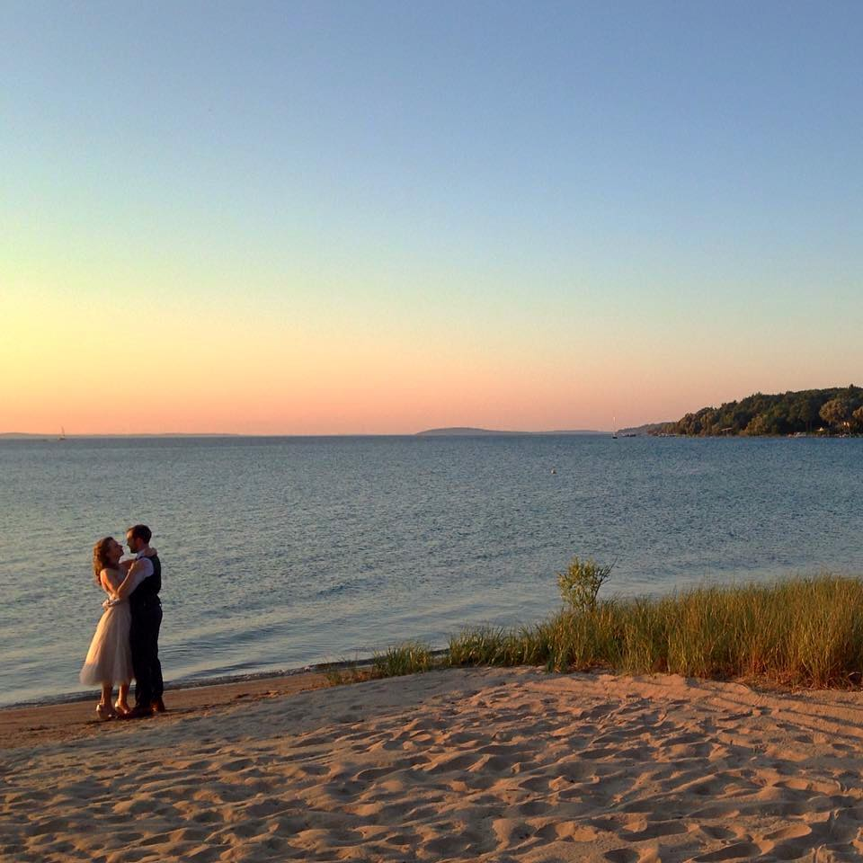

Abby and Justin's wedding: July 18, 2015
The best thing to hit Traverse City since the tart cherry
Dear friends and family, we can't thank you enough for the love and support you've shown Abby and me over the years, and for helping us kick off our marriage in such a fun, memorable and special way. To keep the joy of that day only a click away, I built this site (from scratch!). We hope that any time you get the itch, you stop by to revisit those moments which remind us how fortunate we are to have you in our lives, and each other.
Hunting for a particular photo?
To make the process of scrolling through 1,000 pics easier on you, please note that they're organized chronologically, as such:
- The week leading up to the wedding
- The rehearsal dinner
- The First Look
- The ceremony
- The reception
- The dancing and fireworks